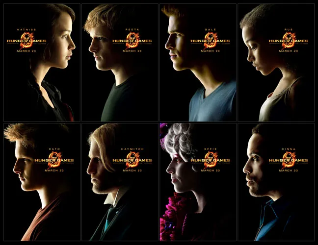

The Hunger Games
Overview

In the moive The Hunger Games there is a Capitol called Panem and is run by President Snow. Besides the Capitol there are 12 districts that provide the Capitol with thier resoucres and make the Capitol richer. District 1 is the richest and district 12 is the most poorest. The Hunger Games is an annual event where two tribuetes from each district a boy and a girl are sent to an area and fight to the dead until there is only one winner. The 74th hunger games come around and district 12 have their first volunteer. Katniss the protagonist volunteers to go into the games instead of her sister Prim. She goes alongside Peeta Mellark who is a baker in district 12. They both go on to see the capitol and "enjoy" what the capitol has to offer. Before the games all tributes go on to train and make an "alliance" with other tributes. Katniss doesn't show off her bow and arrow skills unitl the last solo training which is graded. Peeta does show off his strenght in the middle, so the other tributes don't see him as weak. They go into their interview and Katniss is know as the "girl on fire" because during the parade her outfit and Peeta's had abstract metal flames. She is a favorite tribute to the Capitol and so is Peeta after letting the auience know his love for Katniss. They go on to fight in the arena and district 1 and 2 join Peeta in to help them get close to Katniss and kill her. Katniss makes one alliance with district 11 tribute name Rue. She is killed by district 2 Marvel and Katniss takes revenege. She is seen as a symbol of rebellion after showing her willingness to protect those she loves, even in face of brutality. Fast Forward to the end Katniss and Peeta both manage to win the 74th Hunger Games and go home together.
Characters
- Katniss Everdeen is skilled and talented with a Bow and Arrow. She also represents sacrifice, loyalty, and the moral complexities of leadership and revolution.
- Peeta Mellark is a baker and is very talented in realistic art. He represents love, sacrifice, and the struggle between personal desires and the greater good.
- Haymitch comes off as a cynical, sarcastic, and often drunk. He represents survival, trauma, and the personal costs of victory in the brutual world of Panem.
- Effie is extravagant, well-dressed, and overly concerned with manners and etiquette. She is a mix of comic relief and emotional depth.
- Gale is a storng, resourceful, and passionate with a deep hatred for the Capitol. He represents loyalty, sacrifice, and the cost of war.
- Rue is highly resourceful, intelligent, and skilled in survival. Her kindness, bravery, and resourcesfulness makes her a symbol of innoncence and hope in the brutal world of the games.
- Cinna is a quietly rebellious figure and subtly communicates through his fashion choices that Katniss wears. His kindness and wisdom is what makes Katniss trust him.
- President Snow represents the corrupting power of absolute control and the lengths to whihc a tyrant will go to maintain their authority. He is a symbol of the Capitol's cruelty, manipulation, and exploitation, making him a key figure in the story's exploration of power, rebellion, and resistance.
Their Skills
In The Hunger Games most of the tributes who go into the games already have a skill. For example, district 1 and district 2 provide the most to the Capitol, and are given the opportunity to train and learn how to fight and use weapons at a young age. Marvel and Glimmer from district 1 are skilled with knives and swords. They team up with Cato and Clove from district 2 who are also skilled with weapons and the strongest tributes in the games. District 1 and 2 are mostly always the winners of the games, except for this one. Katniss is talented with a bow and arrow. In the movie it is said by Peeta that she shoots the squirrles and birds right in the eye every time and never misses. We can see she has fast reflexes especially when pressured. Her talent with the bow and arrow helps her survive to the end. Peeta's talent is realistic art. After being injured by Cato he uses his surrounding to create paint and camoflague his face with the rocks. He uses his talent to stay hidden. Rue is small but she is fast and can climb high grounds. This helps her stay up in the trees where the tributes can't reach her. "Foxface" is another clever tribute that shows her cleverness by figuring out the path into the Careers' pyramid of useful supplies.